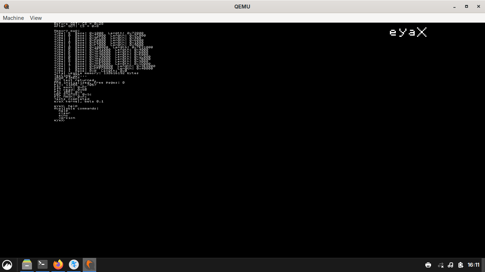

eyaX
eyaX is an operating system project. For now, it features a shell
with commands and a framebuffer console.
eyaX is up for contribution — everyone is welcome to help.

eyaX running in QEMU (kernel beta 0.1)
Incomplete — things you can help fix:
- FilesystemNOT DONE
- Shell echo commandINCOMPLETE
- System callsNOT DONE
- Userland ExecutionNOT DONE
- ELF LoaderNOT DONE
- Paging / Virtual MemoryNOT DONE
- Physical Memory AllocatorNOT DONE
View on GitHub